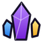
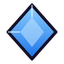
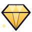
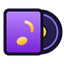

Rehber
 Rehber: nasıl oynanır?
Rehber: nasıl oynanır?
Nasıl oynanır ve terimler: Plak, Parça, kademe, set, seri, pity.
Adım adım
- 1. Dinle: Spotify'da dinlediğin (en az 30 sn) her şarkı 3 Plak (günde en fazla 30 şarkı). Dinlenen şarkılar sunucunun havuzuna girer ve karta dönüşür.
- 2. Kutu aç:
/kutu= 100 Plak. Kademe oranları her zaman/oranlar'da. Kart; ~%25 senin bu sunucuda dinlediğin henüz sahip olmadığın şarkılardan, ~%50 sunucu havuzundan, ~%25 diğer sunuculardan seçilir. - 3. Topla: Kopya kartlar Parça'ya dönüşür; Parça ile eksik kartını
/kart üretile üretirsin. İstemediğin kartı/kart parçalaile Parça'ya çevirebilirsin. - 4. Her gün:
/günlüködülü + 3 görev; üçü de bitince 1 bedava kutu.
Terimler
Plak
Oyun parası. Dinleyerek (3/şarkı), /günlük (100+) ve görevlerden kazanılır; kutu açar (100 Plak).

ParçaHer kutudan kademeye göre +2 / +3 / +5 / +12; kopya karttan ayrıca Yaygın 5 · Nadir 15 · Epik 50 · Efsanevi 150. Kart üretir: 30 / 90 / 300 / 900.


KademeYaygın, Nadir, Epik, Efsanevi. Kart basıldığı andaki kademesini hep korur.
#️⃣ Basım no
O şarkıdan kaçıncı kartın sende olduğu (#1 = ilk basım). Numaralar hiç yeniden kullanılmaz.

SetKatalogda aynı albümden en az 3 şarkı. Hepsini toplayınca şarkı başına 30 Plak; /setler.
Seri
/günlük'ü art arda almak. Her gün +10 Plak artar; her 7 günde Epik+ garantili kutu.
🎯 Pity (garanti)
Şanssızlık koruması: üst üste 10 kutuda Epik+, 45 kutuda Efsanevi kesin çıkar.
 Havuz (kendi / sunucu / genel)
Havuz (kendi / sunucu / genel)
Kutudaki kartın seçildiği yer: ~%25 kendi (bu sunucuda dinlediğin, henüz sahip olmadığın şarkılar), ~%50 sunucu (bu sunucuda dinlenenler), ~%25 genel (diğer sunucular). Kendi havuzun küçükken payı sunucuya, sunucu havuzu küçükken payı genele kayar.
 Spotify neden gerekli?
Spotify neden gerekli?
Bot yalnızca Discord'daki "dinliyor" durumunu görür. Görünmezse Plak kazanamazsın ve havuz büyümez: Ayarlar → Bağlantılar → Spotify → "Durum olarak göster".
Sayılar oyun dengesine göre değişebilir; güncel oranlar /oranlar'da.